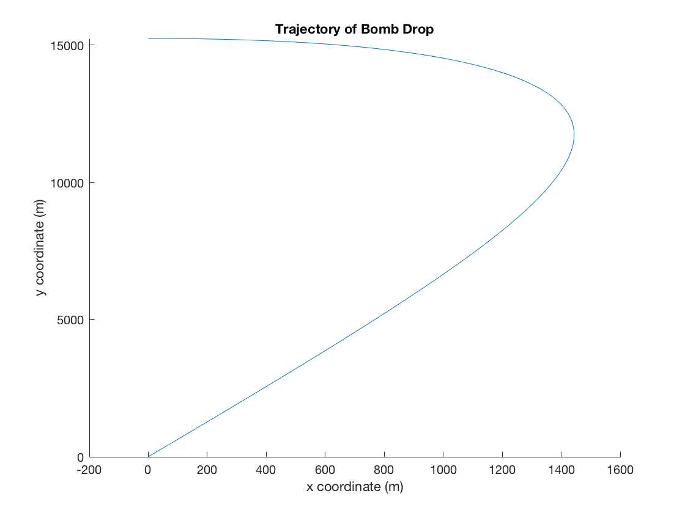
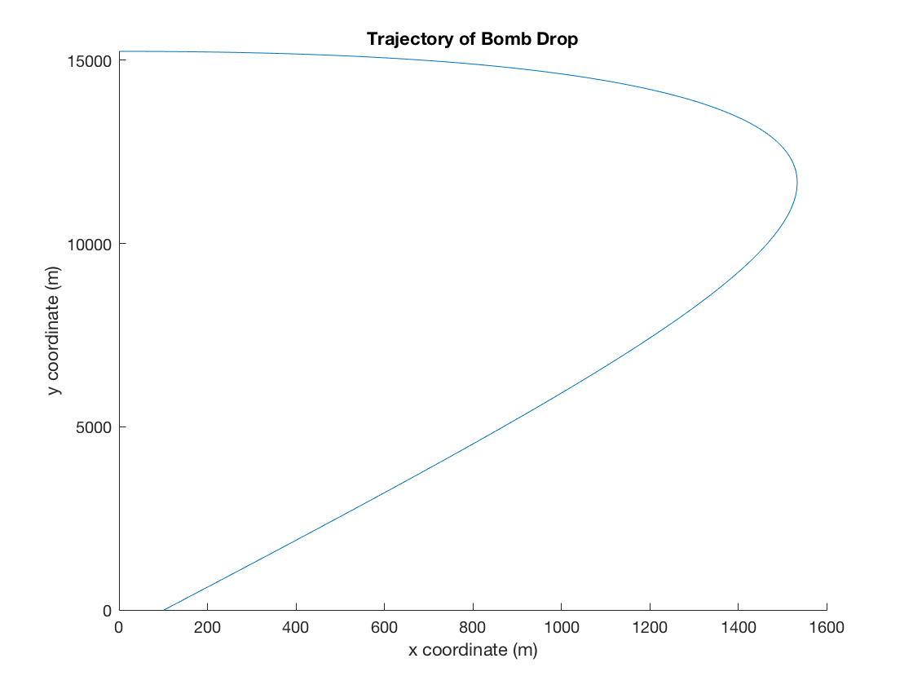
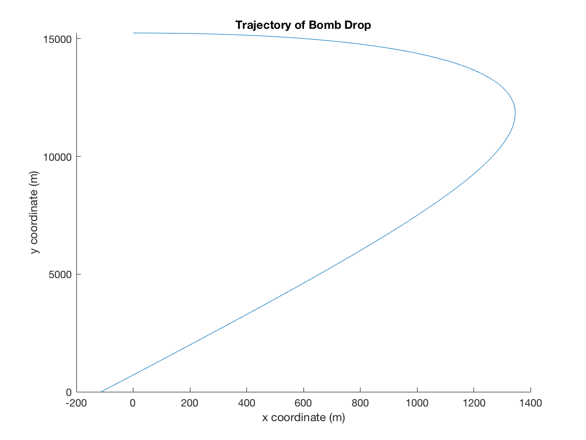

Fowels and Cassidy Problem C 4.1
Luke Polson V00849485
Contents
Constants
Defines all the constants used in the program. Converts all numbers to standard units.
h=50000/3.28084; %Converts to meters % Diameter D=2*0.2; %2*radius % Mass m=100; % Gravity g= 9.81; %Speed of air WRT Ground V = -26.8224; % Friction constants c1=(1.55*10^(-4))*D; c2=(0.22)*D^2; % Speed of plane WRT Ground - obtained through trial and error vplane = 107.45;
Differential Equations
Solves for x as a function of time and y as a function of time. y(1) y-position y(2) y-velocity y(3) x-position y(4) x-velocity
height=@(t,y)[y(2); -(c1/m)*y(2)-(c2/m)*y(2)*sqrt(abs(y(2).^2+(y(4)-V).^2))-g; y(4); -(c1/m)*(y(4)-V)-(c2/m)*(y(4)-V)*sqrt(abs(y(2).^2+(y(4)-V).^2))]; sol1 = ode45(height, [0,500], [h,0,0,vplane]); space = 0:0.1:500; y = deval(sol1,space,1); x = deval(sol1,space,3);
Part A/B
Plots trajectory of bomb with vplane = 107.45m/s with respect to the ground. This value was obtained by plotting various times and optimizing so that the x intercept was as close to zero as possible
figure('name','Part A/B','NumberTitle','on'); hold on; title('Trajectory of Bomb Drop') ylabel('y coordinate (m)') xlabel('x coordinate (m)') plot(x,y) ylim([0,inf]) hold off;
The trailing side of the trajectory is linear because the bomb has reached terminal velocity with respect to the air in terms of y, and is moving with constant velocity with respect to the air in terms of x.
Part C
The values of the following speeds were obtained by plotting various initial plane speeds and finding the values at which the x axis intercepted at x=-100 and x=100.
This value corresponds to the bomb landing 100m east of the target
vplane=114.45; height=@(t,y)[y(2); -(c1/m)*y(2)-(c2/m)*y(2)*sqrt(abs(y(2).^2+(y(4)-V).^2))-g; y(4); -(c1/m)*(y(4)-V)-(c2/m)*(y(4)-V)*sqrt(abs(y(2).^2+(y(4)-V).^2))]; sol1 = ode45(height, [0,500], [h,0,0,vplane]); space = 0:0.1:500; y = deval(sol1,space,1); x = deval(sol1,space,3); figure('name','Part C','NumberTitle','on'); hold on; title('Trajectory of Bomb Drop') ylabel('y coordinate (m)') xlabel('x coordinate (m)') plot(x,y) ylim([0,inf]) hold off;
This value corresponds to the bomb landing 100m west of the target
vplane=100.0; height=@(t,y)[y(2); -(c1/m)*y(2)-(c2/m)*y(2)*sqrt(abs(y(2).^2+(y(4)-V).^2))-g; y(4); -(c1/m)*(y(4)-V)-(c2/m)*(y(4)-V)*sqrt(abs(y(2).^2+(y(4)-V).^2))]; sol1 = ode45(height, [0,500], [h,0,0,vplane]); space = 0:0.1:500; y = deval(sol1,space,1); x = deval(sol1,space,3); figure('name','Part C','NumberTitle','on'); hold on; title('Trajectory of Bomb Drop') ylabel('y coordinate (m)') xlabel('x coordinate (m)') plot(x,y) ylim([0,inf]) hold off;
It follows that the pilot must control the plane within about plus or minus 7m/s to hit within 100m of the target. In terms of miles per hour this is an error of around plus or minus 15.7 miles per hour.